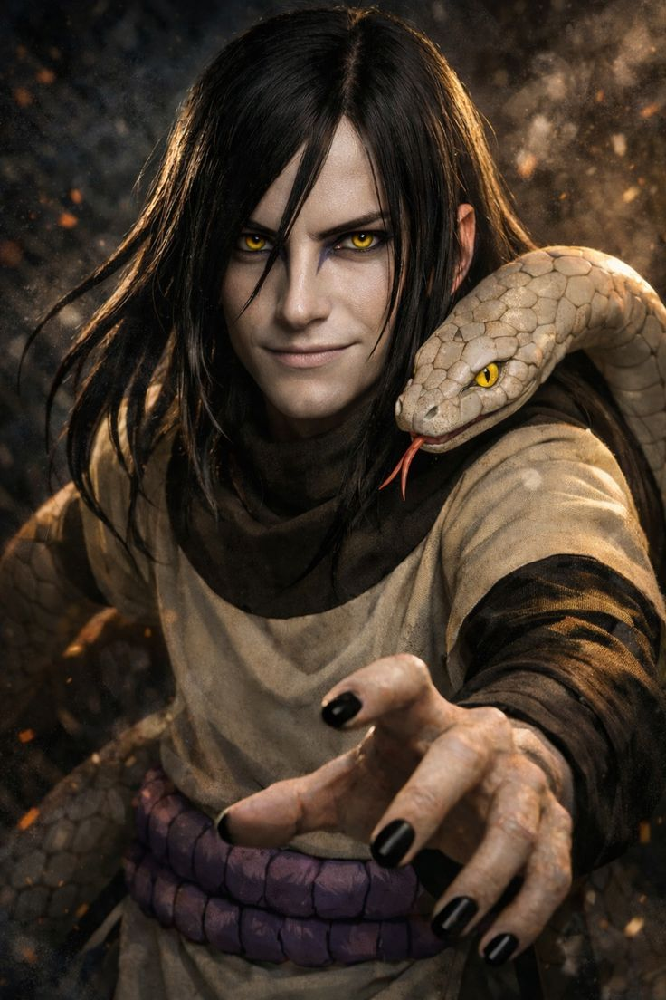

Orochimaru is one of the most complex and mysterious figures in Naruto, known for his vast knowledge, dangerous experiments, and desire for immortality. Originally a prodigy from Konohagakure, he was trained by Hiruzen Sarutobi alongside Jiraiya and Tsunade as one of the legendary Sannin. From a young age, Orochimaru showed exceptional talent and intelligence, but his obsession with learning every jutsu and overcoming death led him down a dark path. He conducted forbidden experiments on humans to gain power and achieve eternal life, which forced him to leave the village and become a rogue ninja. Later, he founded Otogakure, where he continued his research and gathered loyal followers. Orochimaru became a major antagonist, even launching attacks against his former home.
Despite his villainous actions, Orochimaru is not purely evil; he is driven more by curiosity and ambition than hatred. Over time, his role becomes more neutral, showing less interest in destruction and more in observation and knowledge. His mastery of forbidden jutsu, body-switching techniques, and vast intelligence make him one of the most dangerous and fascinating characters in the Naruto series.
Orochimaru has a dark, complex, and highly intellectual personality that makes him one of the most intriguing characters in Naruto. He is calm, calculating, and rarely shows strong emotions, often speaking in a quiet and unsettling manner that reflects his mysterious nature. Orochimaru is driven by an intense curiosity and desire for knowledge, especially about forbidden jutsu and the secrets of immortality.
Unlike many villains, he is not motivated by revenge or anger but by ambition and a desire to understand everything in the world. This makes him extremely dangerous, as he is willing to cross moral boundaries and conduct inhumane experiments without hesitation. He views people more as subjects or tools rather than forming emotional connections, which shows his detached and cold mindset.
However, Orochimaru also displays patience and strategic thinking, carefully planning his actions and waiting for the right moment to strike. Over time, his personality evolves, becoming less destructive and more observant, showing a neutral and curious attitude toward the world. His unique blend of intelligence, ambition, and lack of morality defines him as a truly unpredictable and fascinating character.
Orochimaru possesses a vast and terrifying range of abilities that make him one of the most dangerous shinobi in Naruto. As a former prodigy of Konohagakure and one of the legendary Sannin, his power comes from both natural talent and forbidden experimentation. Orochimaru is a master of countless jutsu, especially forbidden techniques. One of his most unique abilities is his body-switching technique, which allows him to transfer his consciousness into new bodies, effectively granting him a form of immortality. He is also known for his snake-based abilities, enabling him to extend his body, shed his skin to escape damage, and summon giant serpents like Manda.
He has deep knowledge of sealing jutsu and was capable of using the powerful Edo Tensei (Reanimation Jutsu) to revive the dead and control them in battle. Orochimaru also developed the Curse Mark, which grants others increased power at the cost of their will. In combat, he is highly intelligent and strategic, making him extremely difficult to defeat. His combination of regeneration, forbidden jutsu, and scientific experimentation makes him nearly impossible to kill and one of the most feared characters in the series.

Orochimaru carried out many missions throughout Naruto, but unlike other shinobi, his missions were often driven by his personal goals rather than loyalty to a village. One of his most significant missions was the invasion of Konohagakure, where he secretly planned and executed an attack during the Chunin Exams. His objective was to destroy his former home and assassinate his former teacher, Hiruzen Sarutobi. This mission showcased his strategic brilliance and ruthlessness, as he manipulated events from behind the scenes and used powerful techniques like reanimation to fight the Hokage.
Another important mission involved training and manipulating Sasuke Uchiha. Orochimaru aimed to take over Sasuke’s body due to his powerful Sharingan, making this a long-term and highly calculated mission. He gave Sasuke the Curse Mark to increase his strength and draw him closer. Orochimaru also established Otogakure as part of his plans, using it as a base for experiments and operations. Overall, his missions reflect his ambition, intelligence, and willingness to do anything to achieve immortality and ultimate knowledge.
Orochimaru does not fully possess Sage Mode in Naruto, but he has a strong connection to senjutsu (natural energy techniques). He discovered the secrets of Sage Mode at Ryuchi Cave, the legendary home of snake sages. However, Orochimaru was unable to properly master Sage Mode because his body could not handle the natural energy required to achieve a perfect transformation.
Despite this limitation, Orochimaru gained vast knowledge about senjutsu and passed this knowledge on to others. His most successful student in this area was Kabuto Yakushi, who was able to achieve Snake Sage Mode by modifying his body using Orochimaru’s research.
Although Orochimaru himself could not use Sage Mode, his body modification techniques and experiments allowed him to gain abilities similar to its effects, such as enhanced regeneration, flexibility, and resilience. His constant pursuit of knowledge and willingness to experiment pushed him close to mastering this powerful technique, even if he never fully achieved it.